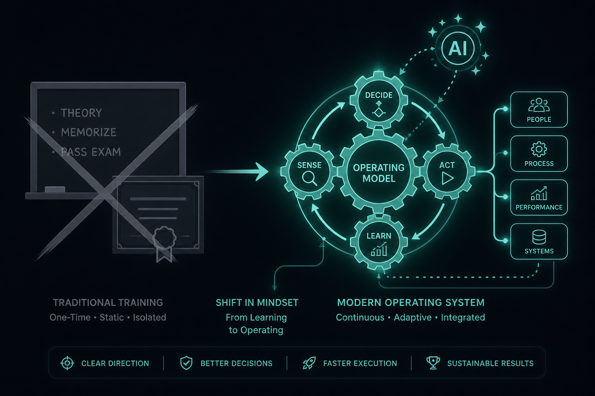

AI fluency is an operating model, not a course
Source: Scrum.org (@Scrumdotorg)
original post
What it claims
Most orgs treat AI fluency as a training problem. Dave West (Scrum.org CEO): it is an operating model issue — how decisions, flow, and accountability change when AI sits inside the work.
Why it matters for a PO
POs get asked to “upskill the team on AI” while the backlog, Definition of Done, and Sprint Review still assume human-only work. Real fluency shows up when the operating model absorbs AI into how value is ordered and inspected.
3 takeaways
- A course without a changed DoD / review / backlog policy is theater.
- Ask where AI changes who decides, what “Done” means, and what you inspect each Sprint.
- Treat AI as a workflow redesign, not a skills checkbox.
Practice this week
Map one AI tool your team already uses onto Sense → Decide → Act → Learn. Write one concrete change to DoD or Sprint Review that makes that loop inspectable. If you cannot name the change, fluency is still “training only.”